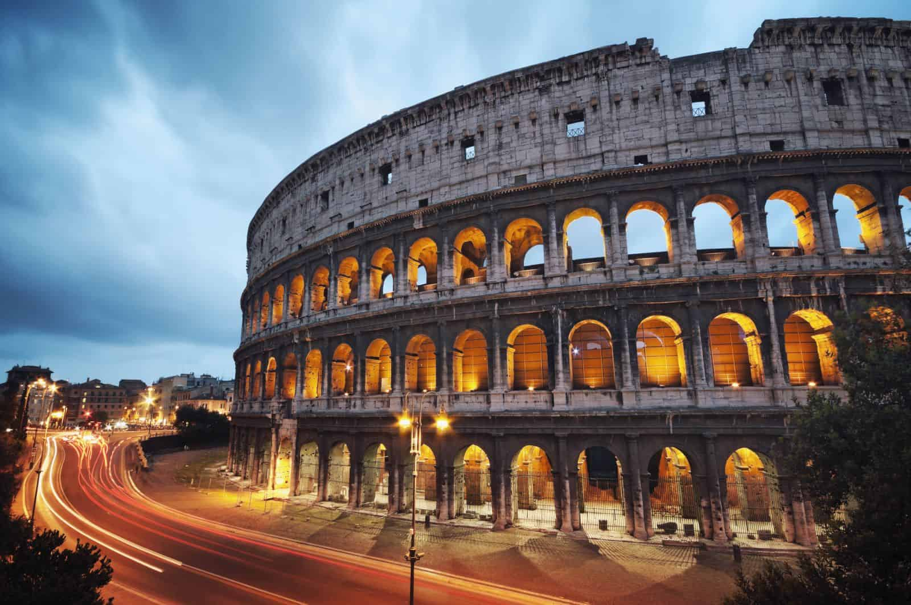
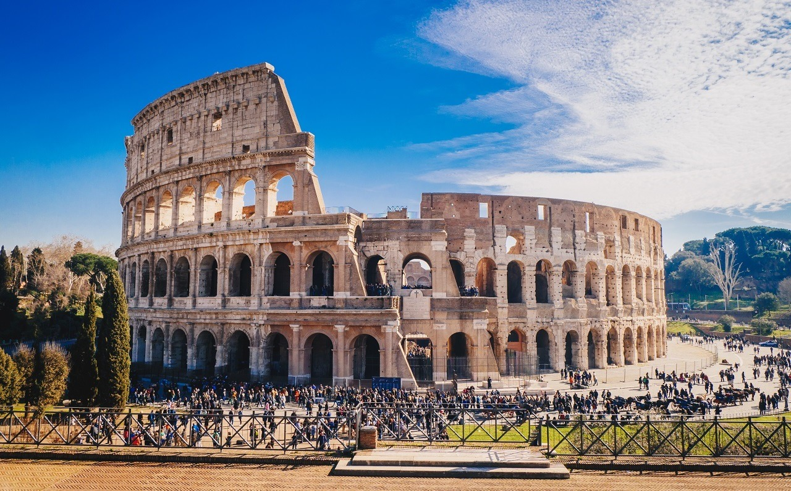
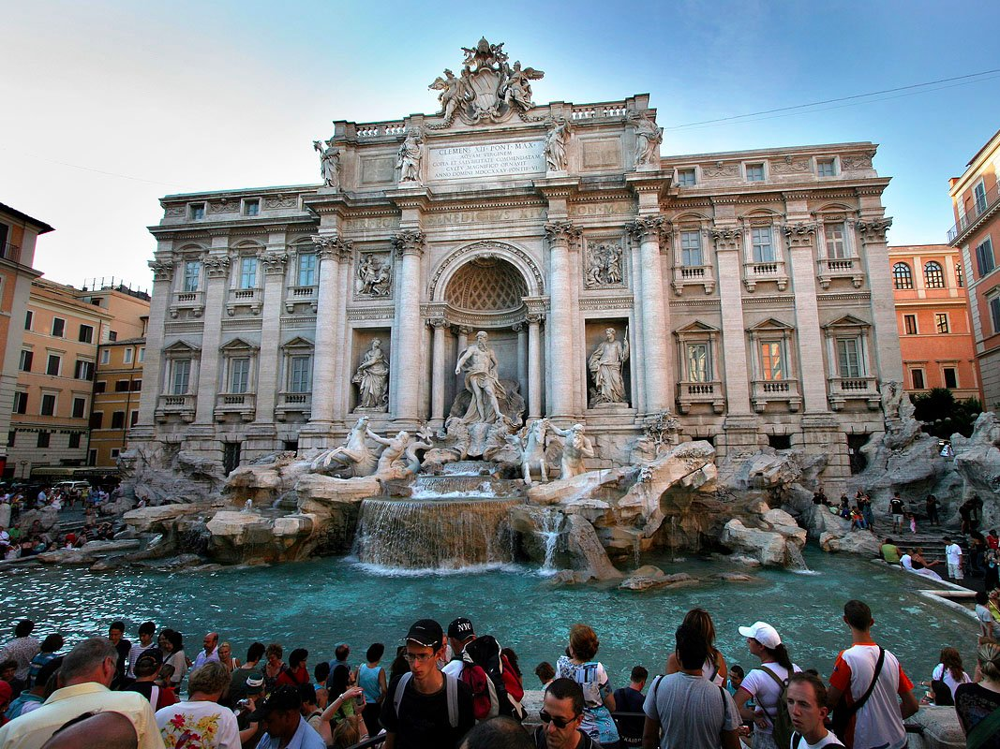
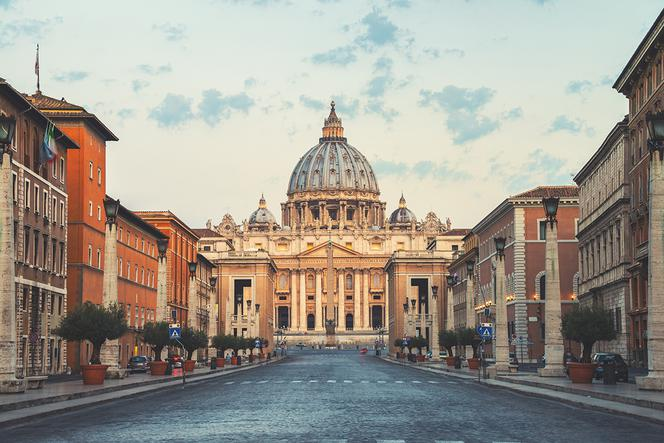

Rzym
Barcelona ::: Amsterdam ::: Rzym

Rzym, „Wieczne Miasto” i stolica Włoch, to metropolia z 28-wiekową historią, łącząca starożytne ruiny, takie jak Koloseum i Forum Romanum, z barokowym urokiem i przepychem Watykanu. Położony na siedmiu wzgórzach nad Tybrem, stanowi centrum kultury, mody i kuchni, oferując unikalną atmosferę „La Dolce Vita”. Najlepszym sposobem zwiedzania miasta jest spacer, niemniej żeby zobaczyć jego większą część trzeba skorzystać z komunikacji miejskiej. Podstawą jej działania jest zintegrowany system komunikacji publicznej METREBUS, dzięki któremu ten sam bilet obowiązuje we wszystkich środkach lokomocji, a można nimi dojechać do najodleglejszych zakątków miasta, gdyż Rzym jest jedną strefą komunikacyjną i nie trzeba uważać na zmiany stref i cen biletów, co jest dużym udogodnieniem dla zwiedzających. Turyści, którzy nie mają zbyt wiele czasu na spacer po mieście mogą z powodzeniem korzystać z autobusów i trolejbusów, których linie przebiegają w okolicach najważniejszych zabytków.
Zabytki

Koloseum (Amfiteatr Flawiuszów) w Rzymie to starożytna, eliptyczna budowla z I wieku n.e. (ukończona ok. 80 r. n.e.), symbolizująca potęgę Cesarstwa Rzymskiego. Mierzy 188 m długości, 156 m szerokości i ok. 48,5 m wysokości, mieszcząc dawniej 50-80 tysięcy widzów. Służyło głównie do walk gladiatorów, polowań na zwierzęta i pokazów, posiadając arenę z systemem podziemnych korytarzy (hypogeum).
fontanna di trevi

Fontanna di Trevi (wł. Fontana di Trevi) – najbardziej znana barokowa fontanna w Rzymie, w rione Trevi (R. II). Została zbudowana z inicjatywy Klemensa XII w miejscu istniejącej wcześniej fontanny zaprojektowanej przez Leona Battiste Albertiego z 1435 r. Zasila ją woda doprowadzona akweduktem zbudowanym w 19 r. p.n.e. przez Agrypę, tym samym, który zasila fontannę Barcaccia znajdującą się u podnóża Schodów Hiszpańskich.
forum romanum

Tzw. teoria Gjerstada wypracowana w 1968 zakładała, że pierwotnie (w VII w. p.n.e.) na tym terenie znajdowała się osada składająca się z domów na palach[1]. Po wybudowaniu kanału odwadniającego Cloaca Maxima, osuszeniu terenu i utwardzeniu powierzchni, obszar ten stał się miejscem zgromadzeń obywateli[2]. Inicjatorem wybudowania forum miał być Tarkwiniusz Pyszny. Przy powstałym w VI w. p.n.e. placu miano potem wznieść szereg ważnych budynków: Kurię, mównicę (Rostra), świątynię Westy i dom westalek, świątynie Saturna, Dioskurów, Zgody i siedzibę najwyższego kapłana – budynek Regii, archiwum (Tabularium). Ostatnie badania archeologiczne terenu forum przeprowadzone w latach osiemdziesiątych i dziewięćdziesiątych XX wieku zaprzeczyły teorii Gjerstada. Wykazano, że do trzeciej ćwierci VIII w. p.n.e. na terenie Forum Romanum znajdowało się zwykłe bagno zasilane potokiem płynącym wzdłuż późniejszej Via Sacra. Stanowiło ono naturalną granicę pomiędzy znajdującymi się na wzgórzach osadami, tzw. palatyńsko-eskwilińską i kapitolińsko-kwirynalską. Bagno osuszono, a powierzchnię utwardzono w latach dwudziestych VIII wieku p.n.e. (729-720 p.n.e.), co zasadniczo zgodne jest z przekazanym przez rzymskich historyków czasem zjednoczenia Rzymu Romulusa z okoliczną osadą sabińską Tytusa Tacjusza. Przyjmuje się, że w tym właśnie okresie nastąpiło połączenie osady palatyńskiej z kwirynalską w jeden organizm polityczny, którego centrum stanowiło właśnie nowo osuszone Forum Romanum.
Watykan

Watykan, Państwo Watykańskie(wł. Stato della Città del Vaticano [tʃitˈta del vatiˈkaːno], łac. Status Civitatis Vaticanæ) – miasto-państwo w Europie Południowej, na Półwyspie Apenińskim, enklawa na terytorium Włoch, w Rzymie. Najmniejsze uznawane państwo świata pod względem powierzchni i najmniejsze niepodległe państwo pod względem liczby ludności. Watykan to siedziba najwyższych władz Kościoła katolickiego, gdzie rezyduje papież. Obywatele Watykanu to głównie dostojnicy kościelni, księża, zakonnice oraz Gwardia Szwajcarska z rodzinami. Oprócz tego do pracy przychodzi około 3000 osób mieszkających poza murami Watykanu (pracownicy poczty, radia, gazety, sklepów, dworca kolejowego i służby medycznej. Obywatelstwo Watykanu traci się z momentem, kiedy przestaje się w nim mieszkać[5].
Palatyn

Palatyn to jedno z siedmiu wzgórz Rzymu, uważane za miejsce założenia najstarszej osady (Roma Quadrata) przez Romulusa w VIII w. p.n.e.. W czasach cesarstwa stało się prestiżową dzielnicą willową i miejscem budowy pałaców cesarskich. Obecnie to park archeologiczny z ruinami (m.in. Domus Augustana, stadion Domicjana), oferujący widok na Forum Romanum.